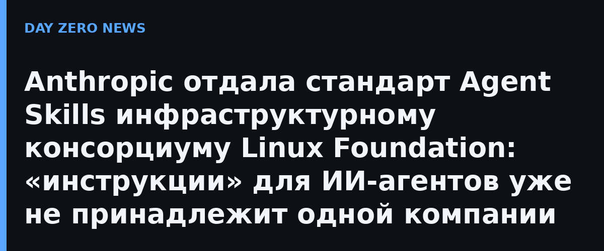

Anthropic объявила о передаче стандарта Agent Skills в Agentic AI Foundation (AAIF) под крылом Linux Foundation — тот же фонд, которому компания в своё время отдала Model Context Protocol (MCP). AAIF Anthropic основала вместе с Block и OpenAI. Переходят название, логотип, GitHub-организация и домен agentskills.io; пользоваться и вносить вклад в стандарт можно без членства в AAIF. Поддержку спецификации будут вести инженеры Anthropic, Google, OpenAI и других компаний как частные лица — старшими мейнтейнерами назначены Давид Сория Парра и Махеш Мураг.
Напомним механику: «скилл» — это папка с файлом SKILL.md, который объясняет агенту конкретную задачу или предметную область, плюс нужные скрипты и справочные материалы. Идея родилась в разработке Claude Code: модель хорошо справлялась с общими задачами, но ей не хватало прикладных знаний о том, как устроены реальные рабочие процессы. После запуска в октябре 2025 года разработчики за недели выложили тысячи скиллов на GitHub и написали загрузчики для Codex, Cursor и OpenCode; затем стандарт опубликовали отдельно от Anthropic. С декабря 2025 года его, по данным компании, поддержали более 70 агентских платформ — от ChatGPT и Cursor до GitHub Copilot и VS Code.
Цифры, которые привела Anthropic, показывают масштаб: опубликован 1 миллион скиллов, установлено почти 280 миллионов. Именно этот тираж делает шаг значимым не для одних только клиентов Claude: когда де-факто отраслевой стандарт переходит от его создателя к независимому консорциуму, конкурентам становится спокойнее внедрять спецификацию у себя, а экосистема получает прозрачный процесс изменений — версиями релизов, формальными предложениями (RFC) и, что важно для безопасности, рекомендациями для тех, кто пишет и устанавливает скиллы.
Для инфобезопасности это событие не косметическое: скилл — исполняемая инструкция с скриптами, и армия из миллиона чужих папок с SKILL.md — это уже поверхность атаки (отравление скиллов, скрытые скрипты, цепочки через автозагрузку). Дорожная карта AAIF прямо начинается с гайдов по безопасности для авторов и установщиков — практика, уже отработанная на MCP.
Anthropic обещает продолжать в том же духе: сообщество, открытые обсуждения спецификации и решение через GitHub и Discord. Для рынка агентских платформ смысл простой: общий формат «знаний для агентов» становится инфраструктурой вроде HTML — ни один вендор не сможет им единолично управлять.